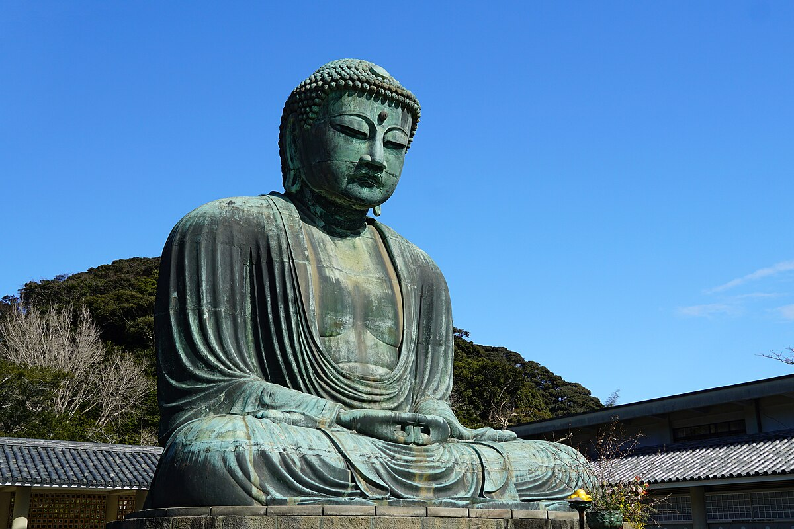
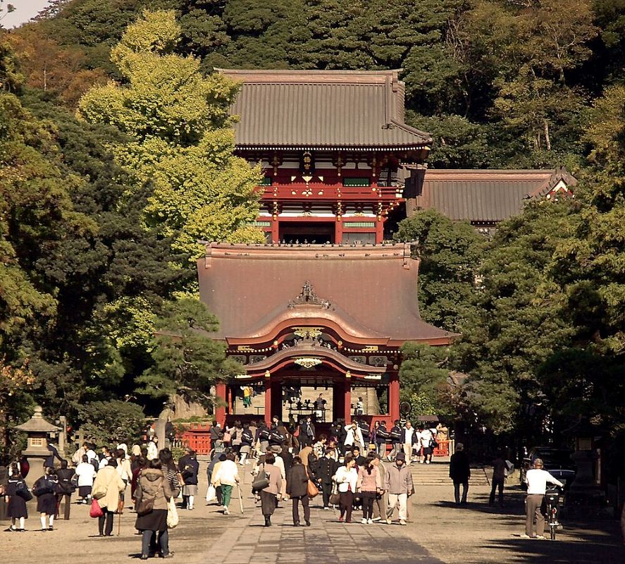
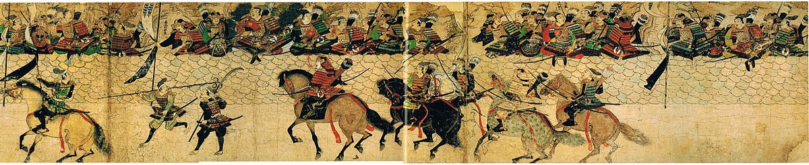
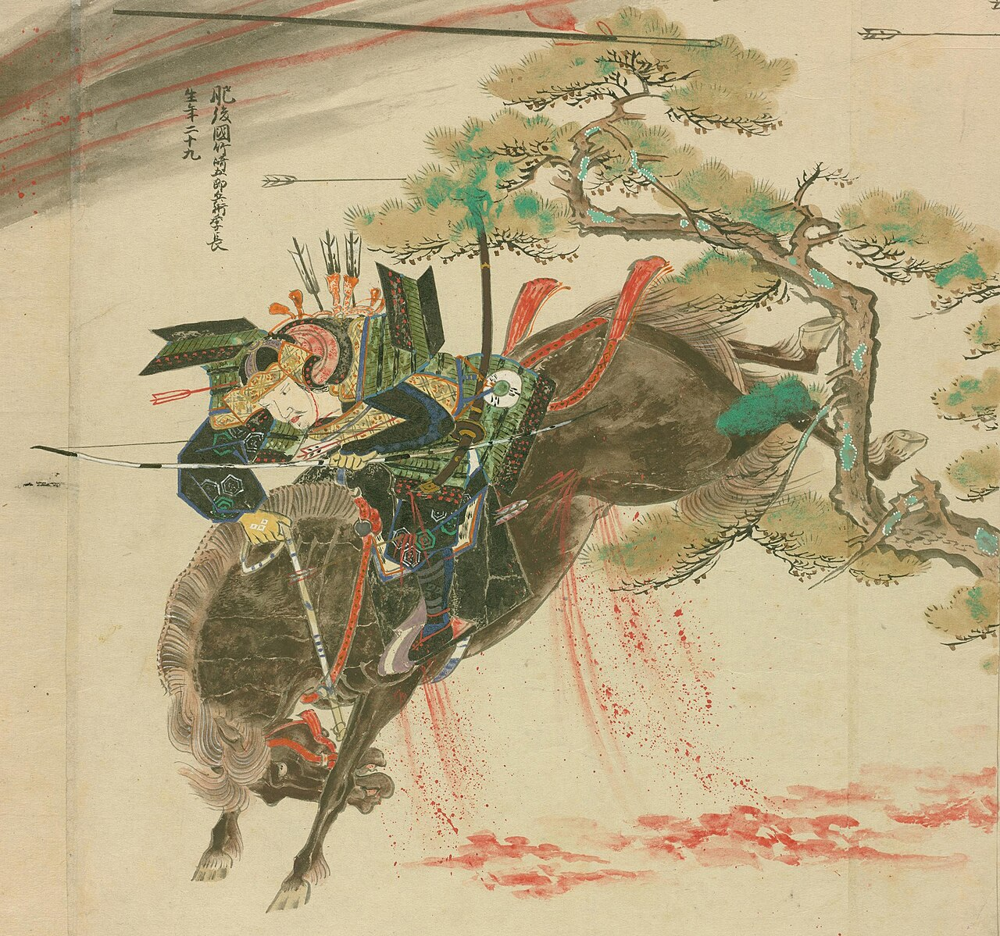

Hojo Tokimasa, depicted in an Edo period ukiyo-e print
The Kamakura Shogunate: Rule and Administration by Warriors
The establishment of the Kamakura Shogunate in 1192 marked the beginning of feudal Japanese history, when the country would be ruled by the warrior class. This new form of governance would
endure through three different shogunates until the mid 19th century. Minamoto no Yoritomo was the first Kamakura shogun, but his tenure was short as he died in 1199. His father-in-law was Hojo Tokimasa, a
close associate of Yoritomo. Following Yoritomo's death, Tokimasa would proclaim himself the shikken, a sort of regent for the new shogun, Minamoto no Yoriie. The shikken would be a title
monopolized by the Hojo clan, and it was the shikken who would emerge as the de facto leader of the country. This meant that the emperor acted as a figurehead to the shogun, while the shogun was
a figurehead for the shikken. The Hojo family were the most powerful clan in the shogunal government, which was commonly referred to as the Bakufu ("tent government"). Yoritomo's widow, Hojo Masako
was even a powerful figure in her own right.
Minamoto Clan
Hojo Clan
The Kamakura Bakufu administered the country through appointed officials known as shugo and jito. Shugo (often translated as constable) were in effect provincial governors, with responsibilities including
the preservation of peace and the policing of their domains. The jito (often translated as stewards) were the managers of estates (shoen), usually for higher ranking nobles and officials. They were invested with powers of
taxation over the estate and people they administered and were likewise responsible for law and order on a local level. The post of jito was particularly desirable for members of the warrior caste. It is important to note that despite
the popular image of samurai in modern media, in which they are usually portrayed as unwaveringly loyal and intent solely on serving their lord with their life, the warriors of this time did not follow the ideals that are commonly associated with them.
Land in Japan was a crucially important asset, and it was from the control of land that power derived. The Bakufu were well aware of this. Disputes over land were very commmon. The main motivation for warriors of this period to fight was the hope of receiving
reward from their lord. In battle, a samurai would take an enemy soldier's head and bring it to his lord for inspection to prove that he rendered his proper service. The lord would verify this and bestow an award on the warrior, which could range from a luxurious
article of clothing to the granting of titles and estates. Land could be inherited by a holder's descendants, even adopted ones, and this commonly resulted in disputes.
It was in 1232 that the Bakufu issued the Joei Formulary, a law code code that set out the rights of jito and landowners. It provided a framework of laws under which fair trials and appeals could be held over disputed ownership of land. The Kamakura Bakufu had
a good reputation for being objective and unbiased when it came to hearing disputes over land ownership. The sound judicial system of the Bakufu was one of the primary reasons for its stability as for the government to continue wielding power, they needed to have the
backing of their influential warrior subordinates. This was tested and proved in 1221, when the retired Emperor Go-Toba rose in revolt against Kamakura and attempted to return sovereign power to the Imperial Court in what became known as the Jokyu War. Many of the warrior
clans allied with the Bakufu, and they triumphed over the forces of Go-Toba, who was exiled to the Oki Islands.
In the area of religion, the Kamakura period saw the emergence of new forms of Buddhism in Japan, which became more popular and began to be observed by the common people. Among the warrior class, Zen Buddhism was followed devotedly. A defining characteristic of Zen is its
emphasis on meditation as a way to reach nirvana (enlightenment). The martial virtues of samurai, which promoted discipline and frugality, is probably why it was so widely practiced by the samurai. Zen originated in China and two monks, Dogen and Eisai, founded the two most
prevalent schools of Zen Buddhism in the Kamakura period, the Soto and Rinzai schools, respectively. Another form of Buddhism to arise was Pure Land Buddhism. Followers of Pure Land Buddhism aspire to dedicate their lives to the goal of being reborn in the Pure Land paradise of a Buddha
after death. In Japan, it was the Amida Buddha's paradise that many aimed to be reborn in on a lotus petal. Devotees call the name of the Amida Buddha for salvation through a mantra known as the nenbutsu, and this they believe will be enough to get to the Pure Land. Honen was the founder of
the Jodo-shu branch of Japanese Pure Land Buddhism, while later in the period the Jodo-Shinshu school was founded by another monk named Shinran. The simple nature of Pure Land Buddhism meant that it could easily be followed by commoners, which allowed it to practiced by all. There is also another
form of Buddhism worth mentioning. This was a school founded by the monk Nichiren, who believed that the path to enlightenment lay in studying the Lotus Sutra and only the Lotus Sutra. Nichiren was intolerant when it came to the beliefs of other schools of Buddhism. The chanting of the phrase "Namu Myōhō Renge Kyō"
(the Japanese title of the Lotus Sutra) was thought to reduce negative karma.

Great Buddha of Kamakura

Tsurugaoka Hachimangu Shrine in Kamakura
Interestingly, there was no major conflict between Buddhism and the native belief system of Shinto. In fact, many people worshipped both native Shinto kami as well as Buddhas and Boddhisattvas (a bodhisattva is someone who is on the verge of reaching enlightenment but stops short of doing so in order to guide others
towards nirvana). This was because many Buddhist deities were identified as being the same as Shinto kami, or being a manifestation of a kami. For example, the sun goddess Amaterasu is often seen to be the same deity as the bodhisattva Kannon. This syncretic fusion of Shinto and Buddhism is known as shinbutsu-shūgō.
This was the popular form of worship in Japan for the next few centuries.
The Mongol Invasions and the Decline of the Kamakura Shogunate
Japan's position as an archipelago made it somewhat isolated it from the Asian Mainland. This meant that the affairs of the continent did not have much of an impact on Japan, and it meant that Japan never faced much threat of an invasion. It was during the Kamakura period that this unlikely threat did actually manifest. In the early
13th century, the Asian Continent was rocked by the conquests of the Mongol Empire led by Genghis Khan. Much of Asia was firmly under the thumb of the Mongols, and even the Song Dynasty of China capitulated to the Mongols now led by Genghis Khan's grandson, Kublai Khan. Kublai Khan declared himself the ruler of the Mongol-led Yuan Dynasty of
China in 1271, and with Korea now under Mongol influence attention was on Japan. The Mongols sent to Japan on numerous occasions emissaries to deliver letters asking the Japanese to submit to Mongol rule in a vassal or tributary manner. Each time the Japanese refused to respond, and the emissaries were treated discourteously. Plans were put in
motion early in 1274 for the mobilisation of a fleet and army to invade and conquer Japan. Likewise, the Kamakura Bakufu, under the leadership of the shikken Hojo Tokimune, initiated defence preparations in Kyushu (the most likely spot for the invasion) and mobilised clans across the country, receiving a ready response.
The Mongol fleet, comprising Mongol and Korean soldiers, began their invasion in 1274 and bore down on the island of Tsushima between the Korean Peninsula and northern Kyushu. The Japanese forces on the island were easily overcome, and the Mongols moved to make landfall on the northern coast of Kyushu. In November 1274, the fleet reached Hakata Bay
in Kyushu, near the administrative city and Japanese base of Dazaifu. The Mongols met the Japanese forces on the beach and intense fighting took place. The Mongol forces are known to have used far superior weaponry and fighting techniques compared to the samurai, with the Mongols launching ceramic grenades from their ships. The Japanese still used an
outdated form of fighting in the form of horseback archery. The Mongols managed to push the Japanese forces back from the shore. The Japanese forces had retreated miles inland by nightfall and were severely weakened. Curiously, the Mongols chose not to push and advance, and instead reboarded their ships as there were signs of an incoming typhoon. This
typhoon arrived and the Mongol fleet was decimated, with surviving Mongol soldiers washing up ashore only to be killed on sight by the Japanese. The first invasion had been successfully withstood by the Bakufu.
When news of the defeat reached Kublai Khan, he sent more emissaries to Japan who demanded a response from the Bakufu. They were taken to Kamakura and were beheaded on the orders of Hojo Tokimune. Preparations were begun for a second invasion. The Japanese expected this, and Kamakura ordered the construction of a series of defensive walls around the coast at
Hakata Bay, some of which survives today. The second invasion came in 1281, and both the Mongols and Japanese were prepared. The defensive wall at Hakata proved effective and the Mongol fleet was repeatedly denied a landing spot by the Japanese. The Japanese even rode small boats out into the fleet during the night and boarded Mongol vessels, conducting raids and
inflicting casualties. The invasion continued for months as a stalemate and in August, another typhoon would bear down on Hakata and the Mongol fleet was once again destroyed. This was the end of the Mongol invasions, as a third planned invasion was never carried out by Kublai Khan. The Japanese still expected a third invasion and kept their forces mobilised until the 1290s.
The two typhoons that happened to destroy the Mongol fleet on each occasion were seen as being a sign of protection from the native Japanese gods. As such, they were named the divine wind, or in Japanese, kamikaze.

Scene from Mongol Invasion Scroll showing the defensive wall in Hakata Bay
Though the Kamakura Bakufu managed to repel the Mongol invasions, the invasions would actually be one of the reasons for the Bakufu's eventual downfall in the coming decades. It has already been mentioned that samurai fought with the expectation of reward. Kamakura and lords began receiving petitions from retainers listing accounts of their meritorious service during the invasions
and asking for reward. In a normal war, for example the Jokyu war of 1221, this could be reasonably met as the defeated rebel leaders could have their lands confiscated and redistributed by the Bakufu to their retainers as reward. Since no land had actually been gained in the Mongol invasions as it was a foreign invasion, this could not be done. The Bakufu courts were overrun with
suits relating to rewards for service and the Bakufu was forced to decree that these would no longer be heard. This lost the Bakufu its reputation for their fair judicial system, and with the added economic difficulties that were accrued from the defensive measures and upkeep of the defending force, Kamakura were increasingly unpopular.
Takezaki Suenaga: An Account of a Warrior of the Mongol Invasions

Takezaki Suenaga
Takezaki Suenaga, a warrior from Higo province in Kyushu, fought in battle against the Mongols during the 1274 invasion. Despite orders to retreat, he charged with a group of other warriors into the ranks of the enemy, being wounded in the process. In a battle report of this action, Suenaga was listed first in a list of of participants and this, he believed, was grounds to petition
for reward. He petitioned his lord, Adachi Yasumori, for reward but was initially ignored. Suenaga travelled to Kamakura, where Yasumori was a notable official, to plead his case but Yasumori was reluctant as he felt that being the first to charge into battle was insufficient to count as good service. However, Yasumori eventually relented and Suenaga was rewarded rights to land as well as
being gifted a horse. Later, Suenaga would commission the Mōko Shūrai Ekotoba, a scroll depicting his actions during the Mongol invasions.
The final blow to the Kamakura Bakufu would come from the Imperial Court. Succession to the throne was decided by Kamakura, and there were two lines of the Imperial family who both contended for it. The Kamakura chose to alternate succession between these two lines in order to weaken the power of the Court. However, Emperor Go-Daigo would ascend to the throne in 1318 and was determined
to restore the Imperial Court's prerogative. The Bakufu was informed that Go-Daigo was plotting against the shogunate, and he was exiled in response to the Oki Islands. Supporters of Go-Daigo then rebelled and Go-Daigo came out of exile. In 1333, Go-Daigo's supporters, which included powerful men such as Kusonoki Masashige and Ashikaga Takauji, were closing in on Kamakura. In the end, the
Kamakura Bakufu capitulated and the Kamakura period came to an end. Emperor Go-Daigo became the de facto ruler of Japan in the Kenmu Restoration. However, it was not long until some of his supporters became disgruntled with Go-Daigo's handling of affairs. In particular, Ashikaga Takauji asked to be named shogun, but the emperor refused. Only three years later in 1336, Emperor Go-Daigo was
overthrown by Takauji, who put a relative of Go-Daigo from the opposing line on the throne while Go-Daigo established his own court south of Kyoto in Yoshino. Ashikaga Takauji established his own government backed by a pretender emperor. This is the start of the Ashikaga Shogunate as well as the Northern and Southern Courts period, which lasts until the 1390s. More information about this is on the page
for the Muromachi Period.